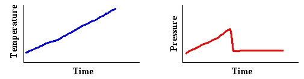

|
|

|
223 Physics Lab: Ideal Gas Laws
|
223 & 224 Lab Overview |
Return to Physics 223 Labs
Purpose
The purpose of this lab experiment is to verify Boyle's Law and Gay-Lussac's Law.
We will also use the equation of state for an ideal gas to make measurements of the
temperature and number of moles of a gas contained in a vessel.
Background
You know from your lecture class that for an ideal gas contained in a
vessel having some volume,
,
the temperature,
,
and pressure,
,
of the gas obey the following relationship,
Furthermore, these variables are related by the equation of state,
or ideal gas law, given by
where
is the number of moles of gas contained in
the volume, and
is known as the universal gas constant.
Depending on the units of pressure and
volume,
has the following values
The amount of gas is commonly expressed in terms of the number of moles of that
substance. Recall that one mole of any substance is equivalent to
molecules of that substance.
(
is known as Avogadro's number,
.)
Therefore, the mass of that substance
is given by
where
is the molar mass of the substance. If we assume that the vessel does not leak, the
number of moles (and therefore the mass) of the substance will remain constant.
It should be noted that for all gases, when the
gas pressure is zero, the temperature of the gas is -273.15°C. This is commonly
referred to as absolute zero, or
.
If we hold the temperature of the gas constant, Equation 1 becomes
Boyle's Law:
If the volume of the gas is held constant, then Equation 1 becomes Gay-Lussac's
Law:
As a note of general interest, our atmosphere close to
the Earth's surface is comprised mainly of the following gases:
Table 1
Components of Air
(Water vapor not included)
|
|
Constituent
|
Content
(% by volume)
|
|
N2
|
78.084
|
|
O2
|
20.946
|
|
Ar
|
0.934
|
|
CO2
|
0.033
|
Objectives
- Plug the temperature sensor into the LabPro interface's Ch.1 port.
Use the surgical tubing to connect the syringe to the pressure sensor, then
plug the pressure sensor into the Ch.2 port, as shown in Figure 1. Using the
Logger Pro program entitled "Boyle's Law", conduct an experiment
to verify Robert Boyle's Law.
(See the Hints and Cautions section for help with the
computer program.)
- Using your data from Objective 1, determine the number of moles,
,
and the number of air molecules contained by the vessel's volume.
- Use the syringe and the pressure sensor, along with your results
from Objective 2, and determine your body temperature. (You may use the
temperature probe to verify your calculation, but not aid in your discovery.)
- Remove the surgical tubing and use the 2-way value to connect the syringe to the
pressure sensor. Slide the pressure sensor
assembly into the plexiglass lid (Figures 5-7)
and insert the temperature sensor into the hole in the lid. The lid is designed
to fit into the stainless steel beaker as shown in Figure 6. When the
beaker is filed with water and the lid is in place, the water may be heated,
allowing the apparatus to undergo a gradual temperature change.
Use this apparatus and the Logger Pro
program entitled "Gas Law", to verify Gay-Lussac's Law.
(Caution: do not heat the water higher than 70°C!)
- Using your data from Objective 4, determine the temperature,
(in units of °C) of absolute
zero. Also determine the number of moles and molecules of air
contained in the volume.
Equipment and setup
- (Figure 1.) The gas law apparatus for Objectives 1 and 3.
The temperature probe
and pressure sensor are plugged into the LabPro interface's Ch.1 and
Ch.2, respectively. The syringe is connected to the pressure sensor.
- (Figure 2.) The syringe may be connected to the pressure sensor
via a length of surgical tubing or small 2-way valve.
- (Figure 3.) The syringe is the vessel used to contain the
volume of gas in today's experiment. Volume graduations are inscribed on
the syringe.
- (Figure 4.) A close-up of the thumb screw attachment on the
syringe. This allows the syringe's plunger to be secured at a fixed
volume.
- (Figures 5 & 6.) The setup for Objective 4. The plexiglass lid
is used to secure the sensors and syringe. Note the use of the 2-way
valve. A hot water bath is used to
gradually increase the temperature of the vessel. Do not allow
the sensor cords to contact the hot plate coils!
- (Figure 7.) The plexiglass lid. Notice the slot for the
pressure sensor and syringe, and the hole for the temperature sensor.
- (Figure 8.) A vernier caliper.
- (Figure 9.) Use this to protect your hands when handling
the hot water bath.
- Hot plate
- Paper towels
|
[Click on images to enlarge.]
|
Hints and Cautions
- Caution!!! Do not allow the wires from the pressure or temperature
sensors to come into contact with the hot plate coils!
- Caution!!! Do not heat the water bath in Objective 4 higher than
70°C!
- Caution!!! Use the hand protectors when handling the hot water bath!
- Caution!!! Do not tighten the thumb screw on the syringe too tight!
- For this experiment, the temperature probe is plugged into Channel 1,
and the pressure sensor is plugged into Channel 2.
- To take data using the Logger Pro program entitled "Boyle's Law", click the
Collect button to start the program. The computer screen should
give the pressure in atmospheres. To record data, set the volume to the
desired reading and press the Keep button to save this data point.
Continue this way until all data points have been recorded, then press
the Stop button.
- Your TA has a small amount of the surgical tubing that you can examine
if you are interested in studying the tube's dimensions, for example.
Online Assistance
- More background
on the Ideal Gas Law
- An Ideal Gas
Calculator
- Conduct your own on-line
gas law experiment
- Atmospheric
constituents
- More atmospheric
constituents
- Clemson Physics Lab Tutorials
- Measurement
uncertainties
- Using error
bars in Excel
Lab Report Template
Each lab group should
download the Lab Report Template
and fill in the relevant information
as you perform the experiment. Each person in the group
should print-out the Questions section and answer them individually.
Since each lab group will turn in an electronic copy of the lab report,
be sure to rename the lab report template file. The naming convention is as
follows:
[Table Number][Short Experiment Name].doc.
For example the group at lab
table #5 working on the Ideal Gas Law experiment would rename their template file
as "5 Gas Law.doc".
Nudge Questions
These Nudge Questions are to
be answered by your group and checked by your TA as you do the lab. They
should be answered in your lab notebook.
General Nudges
- What units will you use for this experiment? Why?
- How do the units of mL, L and cm3 compare?
- In Equation 2, what exactly do the thermodynamic variables
,
and
represent? How is each measured?
- Which value of
will you use? Why?
Objective 1 Nudges
- What is Boyle's Law?
- How will you verify Boyle's Law?
- What is the actual volume of the vessel? How will you measure this?
- What initial volume did you use for this experiment? Why?
- What is the uncertainty in your measurements of
?
- What quantities are plotted along each axis?
- How many data points did you take?
- What does the slope of the best-fit line represent?
- What to you expect the y-intercept of the best-fit line to be? Does
the data show this?
- Does the best-fit line lie within the experiment's error bars?
Objective 2 Nudges
- How will you use your Objective 1 data to find
?
- Should the system be re-opened to the environment (i.e., remove the
syringe from the tubing, remove the syringe plunger, etc.) before attempting
this Objective?
- What assumptions will you make in determining the temperature of the
gas contained by the vessel's volume?
- How can you reduce the errors in the temperature measurement?
Objective 3 Nudges
- Should the system be re-opened to the environment (i.e., remove the
syringe from the tubing, remove the syringe plunger, etc.) before attempting
this Objective?
- Is it possible to take multiple measurements, or are we limited to one
data point for this Objective?
- What volume will you use for this Objective? Is the volume fixed or variable?
- What assumptions will you make in determining the temperature of the
gas contained by the vessel's volume?
- How can you reduce the experimental errors for this Objective?
- What is the expected body temperature?
- How accurate was your measurement?
Objective 4 Nudges
- What is Gay-Lussac's Law?
- How will you verify Gay-Lussac's Law?
- What initial volume did you use for this experiment? Why?
- Is the volume fixed or variable? Does it matter?
- What assumptions will you make in determining the temperature of the
gas contained by the vessel's volume?
- How can you reduce the experimental errors for this Objective?
- What quantities are plotted along each axis? Look ahead to Objective 5
before deciding this.
- What are the units of the thermodynamic variables?
- How many data points did you take?
- What does the slope of the best-fit line represent?
- What to you expect the y-intercept of the best-fit line to be? Does
the data show this?
Objective 5 Nudges
- How will you use your Objective 4 data to find
and
?
Questions
These Questions are also found in the lab write-up template. They must be answered by
each individual of the group. This is not a team activity. Each person should
attach their own copy to the lab report just prior to handing in the lab to your
TA.
- Show how the first value for
in Equation 3 can be converted to the give the second value.
- Use Table 1 and/or the Online
Assistance to determine the mass O2
contained in the vessel from Objective 4 at the beginning of the
experiment? What is the mass of O2 at the end of the experiment?
What assumptions are you making?
- Compare number of moles contained in the vessel from Objectives 2 and 5.
Is this what you expect?
- The figures below show an obviously flawed data set taken from a student's
work on Objective 4. What mistake or experimental error must have occurred
which would have produced these plots?

TA Notes
- You may need to borrow lids from the 207 lab room.
Data, Results and Graphs
Answers to Questions
CUPOL Experiments
See the tutorial on using the
vernier caliper.
If you have a question or comment, send an e-mail to Lab Coordiantor:
Jerry Hester
223 & 224 Lab Overview |
Return to Physics 223 Labs
|
|